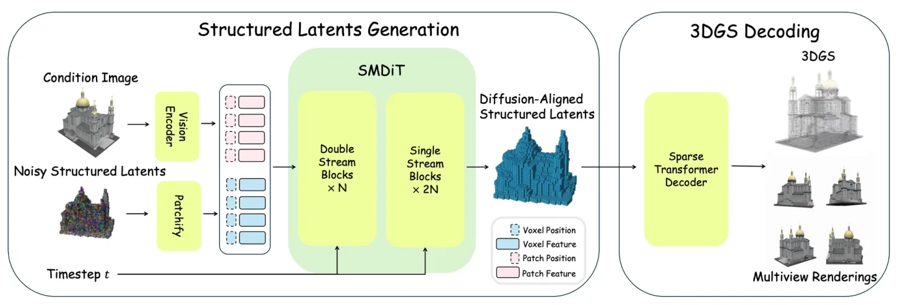
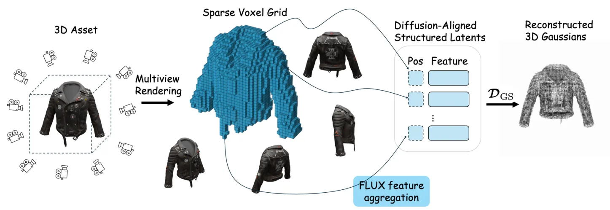
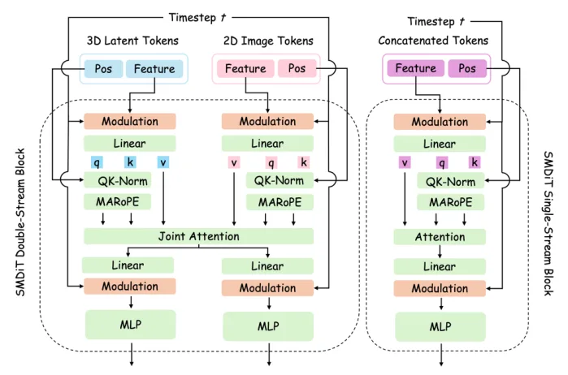
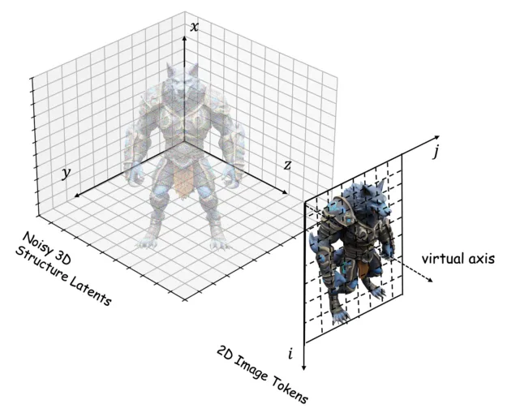

FLUX3D：扩散对齐稀疏表示的高保真 3D 高斯生成FLUX3D: High-Fidelity 3D Gaussian Generation with Diffusion-Aligned Sparse Representation
偏 3D 资产生成而非在线重建/定位；但对 3DGS 表示学习、稀疏 latent 和高保真资产生成有参考价值，若开源可作为仿真资产或补全工具跟踪。
一句话工作总结
通过扩散对齐结构化 latent 和稀疏结构感知 DiT，提高 image-to-3DGS 生成中的细节保真与 2D-3D 对齐。
摘要
现有基于稀疏 voxel 的 image-to-3DGS 方法在输入图像高频细节保持上存在瓶颈：一是构建稀疏 latent 时常使用偏语义抽象的判别式 2D 特征，削弱重建线索；二是生成阶段标准 diffusion transformer 难以将密集 2D 图像 token 与稀疏 3D voxel latent 对齐。FLUX3D 提出 Diffusion-Aligned Structured Latents 与 decoder-only 表示学习结构，提升 3DGS 重建保真度；同时设计 sparse-structure-aware diffusion 框架，包含 Sparse-structure Multimodal Diffusion Transformer 和 Modal-Aware RoPE，以改善几何无关的 2D-3D 对齐。
Sparse voxel representation has emerged as a scalable foundation for image-to-3D Gaussian Splatting (3DGS) generation, yet current methods struggle to preserve high-frequency visual details of input images due to two structural bottlenecks. First, they adopt discriminative 2D features optimized for semantic abstraction to construct sparse voxel latents, which suppress reconstructive cues and induce a representation bottleneck. Second, in the generation stage, standard diffusion transformers lack effective mechanisms to align dense 2D image tokens with sparse 3D voxel latents, resulting in a cross-modal correspondence bottleneck. To address these issues, we propose FLUX3D, a scalable image-to-3DGS framework that boosts both representation learning and cross-modal alignment during generation. We first revisit 2D feature selection for sparse-voxel-based 3D representation learning, propose Diffusion-Aligned Structured Latents (DA-SLAT) and couple it with a decoder-only architecture to improve 3DGS reconstruction fidelity. We also design a sparse-structure-aware diffusion framework, which integrates the Sparse-structure Multimodal Diffusion Transformer (SMDiT) and Modal-Aware Rotary Positional Embedding (MARoPE) to achieve geometry-agnostic 2D-3D alignment. Extensive benchmark experiments demonstrate that FLUX3D yields substantial improvements in appearance fidelity and significantly outperforms all state-of-the-art (SOTA) methods in generating high-quality 3DGS assets.
中文解读摘录
- 英文题名：Pocket-SLAM: Rendering-Area-Aware Pruning for Memory-Efficient 3DGS-SLAM
- 作者：Leshu Li, Jie Peng, Yang Zhao
- 类别/来源：cs.CV；comment: 2026 IEEE International Conference on Robotics and Automation (ICRA)；采集 score=17；阅读优先级=9.3/10。
- 一句话总结：用“对有效渲染区域的贡献”而不是单点 opacity/gradient 启发式来剪枝高斯，在保持定位/建图精度的同时显著降低 3DGS-SLAM 运行内存。
- 为什么值得看：这是今天最贴近 SLAM 主线的工作，直接面向大尺度/自动驾驶场景中 3DGS-SLAM 高斯点持续累积的问题；摘要报告 EuRoC/KITTI 上超过 60% 内存降低和 2 倍以上 FPS 提升，且给出了开源仓库地址。后续应复核其 pruning 触发策略、实时开销、对回环/长期地图维护的影响，以及和现有 keyframe/visibility 管理的关系。
- 标签：3DGS-SLAM、内存剪枝、实时建图、自动驾驶
- 链接：abs / PDF
图表/页面预览

{kind=link}

{kind=link}

{kind=link}

{kind=link}
